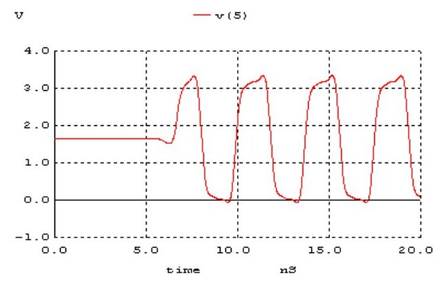

· EEM312
EEM312 Sayısal Elektronik: Y4 Raporları, Halka Osilatörü ve Tersleyicinin Rejeneratif Özelliği
EEM312 – Sayısal Elektronik · 20.04.2011 · 16.10.2026
Bu yazı, Başkent Üniversitesi EEM312 Sayısal Elektronik yazılım laboratuvarının Y4: Halka osilatörü ve tersleyicinin rejeneratif özelliği deneyi için yazılmış iki raporu karşılaştırıyor: 2011 bahar döneminden bir rapor (A) ve 2014'ten bir rapor (B). İkisi de arkadaşların raporları; kişisel bilgiler çıkarıldı. Föy ve model tablosu EEM312 yazılım laboratuvarı föyleri Y4–Y8 yazısında. Kişisel bilgileri kapatılmış raporlar, 2011 raporunun ağ listeleri ve deneyin 2017 sürümüne ait ağ listeleri yazının sonundaki ZIP'te.
1–2. Alt devre olarak CMOS tersleyici
Tersleyici föydeki örnek gibi bir alt devre (.subckt) olarak yazılmış; PMOS için L/W = 1.2 µm/5.4 µm, NMOS için 1.2 µm/1.8 µm, besleme 3.2 V. B raporunun test devresi (model satırları kısaltıldı):
.subckt inv 1 3
M1 3 1 0 0 MOSN W=1.8u L=1.2u NRS=0.333 NRD=0.333
M2 3 1 2 2 MOSP W=5.4u L=1.2u NRS=0.333 NRD=0.333
CL 3 0 0.1P
VDD 2 0 3.2V
.ends
vin 1 0 Pulse(0 3.2 0 1n 1n 100n 200n)
xinv1 1 2 inv
.control
TRAN 1NS 200nS
plot v(2) v(1)
.endcTest devresinde (0.1 pF yük) ölçülen yayılım gecikmeleri:
| Rapor | t_pHL | t_pLH | t_d |
|---|---|---|---|
| A | 1.25 ns | 1.15 ns | 1.2 ns |
| B | 1.630 ns | 1.62 ns | 1.625 ns |
Giriş düşükken PMOS iletimde, NMOS kesimde ve çıkış V_DD'ye çekiliyor (düşükten yükseğe geçiş); giriş yüksekken tersi oluyor. W_p/W_n = 3 seçimi iki geçişin gecikmelerini birbirine yaklaştırıyor.
3. Ardışık tersleyiciler ve rejeneratif özellik
Ardışık bağlı tersleyicilerin (A, B, C düğümleri ve V_O) DC analizinde her kademede VTC'nin geçiş bölgesi daha dikleşiyor. İki raporun ortak açıklaması: tersleyicinin VTC'sinde geçiş bölgesindeki kazanç 1'den büyük, diğer bölgelerde 1'den küçük olduğundan, nominal değerinden bozulmuş bir giriş her terslemede rail-to-rail seviyelere (V_DD ve toprak) biraz daha yaklaşır. Bu özelliğe rejeneratif özellik denir.
Geçici durum analizinde (giriş Pulse(0 3.2 0 1n 1n 100n 200n)) her düğüme kadar biriken gecikmeler:
| Düğüm | A: t_pHL | A: t_pLH | A: t_d | B: t_pHL | B: t_pLH | B: t_d |
|---|---|---|---|---|---|---|
| A | 0.5 ns | 0.6 ns | 0.55 ns | 0.456 ns | 0.42 ns | 0.438 ns |
| B | 0.8 ns | 0.7 ns | 0.75 ns | 0.803 ns | 0.815 ns | 0.809 ns |
| C | 1.1 ns | 1.3 ns | 1.2 ns | 1.202 ns | 1.166 ns | 1.184 ns |
| V_O | 1.4 ns | 1.6 ns | 1.5 ns | 1.56 ns | 1.569 ns | 1.56 ns |
Her kademe gecikmeye yaklaşık 0.35–0.4 ns ekliyor. Girişe 1.6 V ofsetli, 1 V genlikli 5 MHz sinüs (sin(1.6 1 5e6 0 0)) uygulandığında da sinüs birkaç kademe sonra toprak ile besleme arasında tam salınım yapan kare dalgaya dönüşüyor.
4. Halka osilatörü
Beş tersleyicinin sonuncusunun çıkışı ilkinin girişine bağlanınca devre kendiliğinden salınıyor: tek sayıda tersleyici olduğu için hiçbir kararlı durum yok; giriş seviyesi tersleyicilerin gecikmesi kadar sonra tersine dönüyor ve bu sürekli tekrarlanıyor. A(t), B(t), C(t) dalgaları birbirinin terslenmiş ve kaydırılmış hâli; sinyal halkada ilerliyormuş gibi görünüyor.

| Durum | A: periyot | A: frekans | B: periyot | B: frekans |
|---|---|---|---|---|
| Yüksüz | 3.8 ns | 260 MHz | 3.775 ns | 264.9 MHz |
| Her tersleyiciye 100 fF | 15.5 ns | 60 MHz | 15.2 ns | 65.79 MHz |
Halka osilatörünün periyodu T = 2·N·t_p (N = 5 kademe) olduğundan yüksüz durumda kademe başına t_p ≈ 3.8 ns/10 ≈ 0.38 ns çıkıyor; bu, 3. bölümde ölçülen kademe gecikmeleriyle uyumlu. Her tersleyiciye 100 fF yük eklenince kademe gecikmesi yaklaşık dört katına çıkıyor, frekans da aynı oranda düşüyor: yük, devrenin hızını doğrudan sınırlıyor.
Not: A raporunda T = 15.5 ns için f = 1/T ≈ 64.5 MHz eder; raporda yuvarlanarak 60 MHz yazılmış. Yüksüz durumda da 1/3.8 ns ≈ 263 MHz.